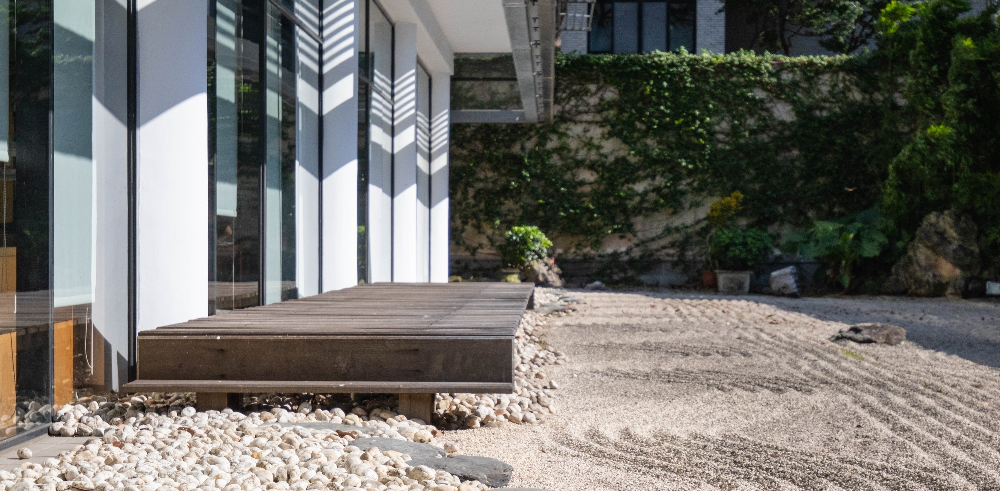

第10駅：和風禅庭――動かずして流れるもの

ここには水がありません。でも、水の流れを感じることができます。
ここには山もありません。でも、高くて静かな存在感を感じることができます。
この空間は、図書館の最深部にある和風の枯山水庭園。
波のように描かれた砂の模様、山のように配置された石。
すべては静止しているのに、なぜか内側にはゆっくりとした“流れ”がある――そんな不思議な空気が漂っています。
学長の廖慶榮氏もこの庭で映像を撮影し、「大学生活で内なるエネルギーを養う場所」として紹介しました。
風景だけじゃない、ここは“考える時間”をくれる場所。
そして、いよいよ最後の駅へ。
それは、森。でも、ただの森じゃない――魔法の森です。